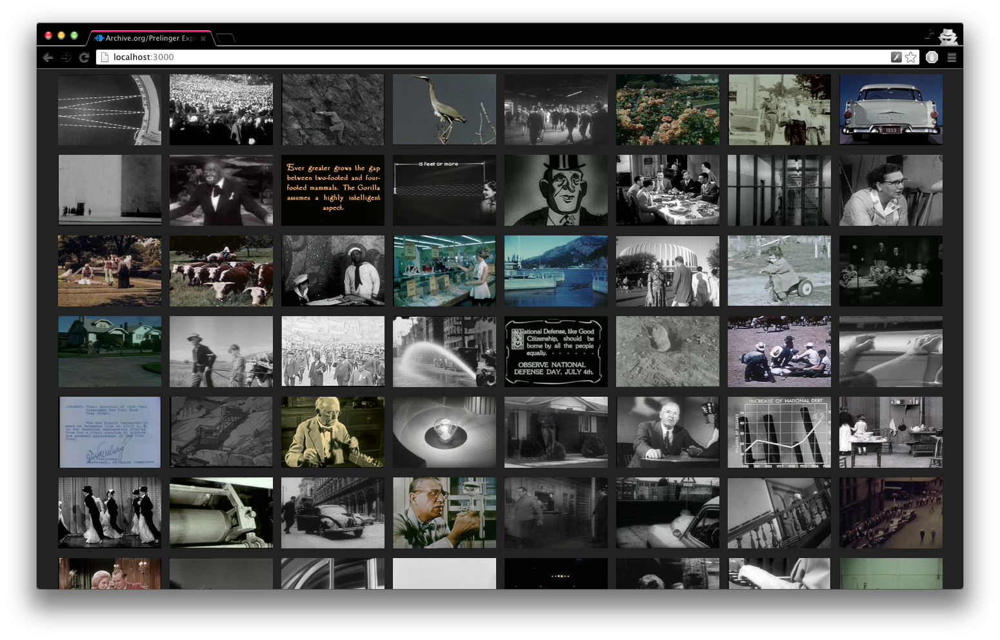
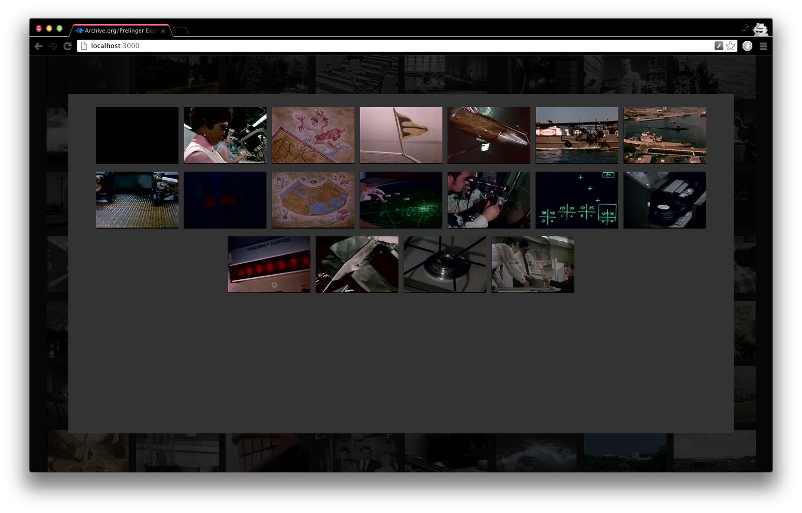
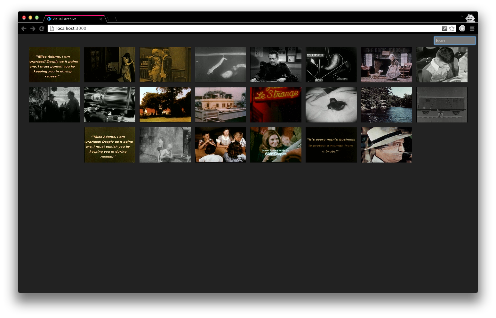

View on GitHub
Visual Archive
A tool for exploring footage collections on archive.org
Download this project as a .zip file
Download this project as a tar.gz file
Overview of entire collection.  When clicking on an individual video, the viewer is presented with a series of frames, which click-through to the video at a specific timestamp on archive.org.  Collections can be filtered by string. 